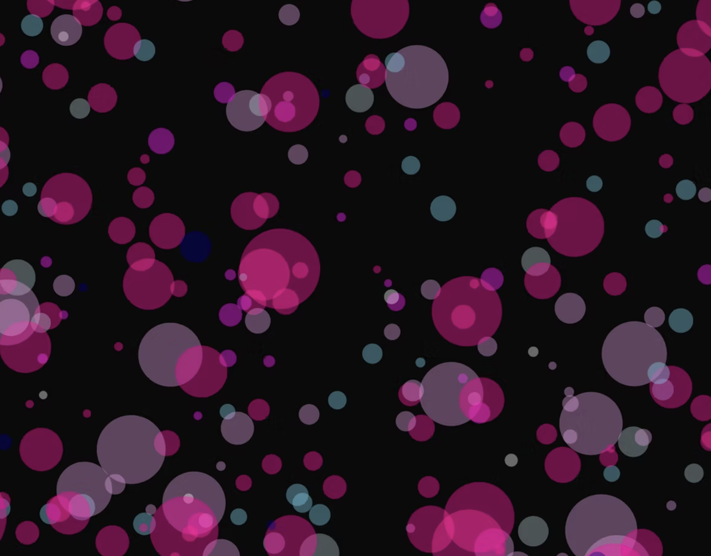

Crescendo in Color transforms audio into visual art by converting musical compositions into dot patterns. This piece utilizes Google Gemini for code generation and Processing for generating real-time visualizations. Each musical note corresponds to a specific color, while differing volume determines dot size. This approach demonstrates fundamental media arts principles including data visualization and AI tools. This piece demonstrates the expanding role of technology in contemporary art practice. The visualizations create a bridge between auditory and visual perception, making music accessible through a different sense.
